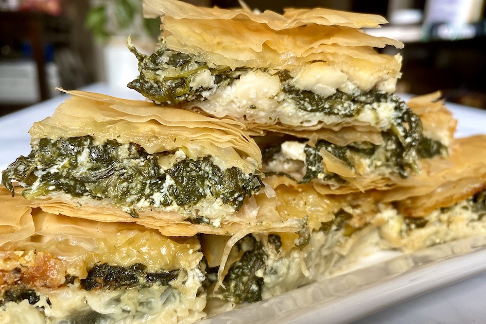

Spanakopita Recipe

A Brief Description of Spanakopita
Spanakopita is a staple Greek food that can be found in
any bakery in Greece. On the outside, it has a crunchy layer
of filo dough and on the inside it contains a mixture of
spinach and cheese. Spanakopita is mainly enjoyed as a lunch
snack or a delicious appetizer.
Ingredients
- 20 ounces fresh spinach
- 10 ounces crumbled feta cheese
- 1 cup ricotta cheese
- 6 green onions chopped
- 1/4 cup basil chopped
- 2 teaspoons dill
- Olive oil
- Filo dough thawed
Instructions
- Preheadt oven to 350.
- Heat a large pan and add half of the spinach until it has
wilted down, about 2-3 minutes. Set aside the wilted spinach,
and repeat with the remaining spinach. Gently squeeze the
spinach to get rid of excess water
- Combine the wilted spinach, green onions, feta, pesto, spinach,
ricotta, and dill in a medium bowl until all ingredients are
evenly mixed.
- Get a 9 x 13 baking dish and spray it with olive oil on the bottom
and the sides. Add one sheet of phyllo dough to the bottom of
the pan and fold it over so it fits in the pan. Brush the top
with olive oil starting with edges to prevent cracking. Layer
7 more sheets, brushing each sheet with olive oil.
- Add the spinach and cheese mixture on top of the phyllo dough
and spread it over the pan evenly.
- Layer another 4 sheets of phyllo dough on top of the spinach-cheese
mixture, brushing each sheet with olive oil. Tuck any remaining
overhanging dough into the pan to seal the filling. Brush the top
layer generously with olive oil.
- Score the spanakopita into 12 squares with a knife, cutting only
partway through. This will make it easier to cut and prevent the
phyllo from breaking.
- Place the spanakopita in the oven and bake for 1 hour until the
top is crispy and golden brown.
Notes
Thaw phyllo dough completely by placing it in your refrigerator the
night before
Place a damp kitchen towel over the phyllo dough sheets when not in
use to prevent it from drying out and breaking